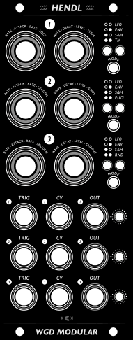

WGD MODULAR
HENDL
Firmware Flasher

- Hold the BOOT button on the Pico 2 and connect it by USB. It appears as a drive named RP2350.
- Click Flash hendl, then pick that RP2350 drive when asked.
- Wait a moment — the module reboots into the new firmware on its own.
Flash a local .uf2 file
No file chosen.
This flasher needs Chrome or Edge on a desktop — it uses the File System Access API, which Firefox and Safari don't support yet. On those, download hendl.uf2 and drag it onto the RP2350 drive yourself.